乔纳·巴修塔： 25岁，隶属地球联邦宇宙军，阶级为少尉。在执行和玛莎·毕斯特·卡拜因有关的作战时驾驶迪杰。在U.C.0095年时，独角兽高达3号机凤凰因发生失控意外而下落不明。 杰札尔队是为了搜索它的下落而组成。乔纳作为NT高达的驾驶员，被派去支援他们执行“狩猎不死鸟”作战。 \他和卢欧商会特别顾问米谢儿·卢欧和下落不明的凤凰驾驶员莉塔·贝尔纳尔是青梅竹马。他们在少年时期曾在澳洲遇上殖民星坠落攻击而生还。
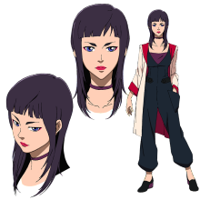
米谢儿·卢欧： 25岁。 以新香港为基地,与地球联邦政府有密切关系的大企业，卢欧商会的特别顾问。 是卢欧商会会长无明的女儿。 擅长略签法的占卜，相当受到财政界信赖。 和作为增援的NT高达一起，搭上了正在进行“狩猎不死鸟”作战的克拉普级宇宙巡洋舰大马士革号。 据说卢欧商会使用的宇宙运输船玫瑰花蕾号里，搭载着由亚纳海姆电子企业提供的各种NT高达装备。
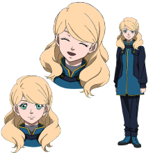
莉塔·贝尔纳尔： 隶属地球联邦宇宙军，阶级为少尉。在机动实验中发生失控意外，是下落不明的独角兽高达3号机凤凰的驾驶员。 少女时期曾经在澳大利亚遇上殖民卫星坠落事件而生还，因此被称为“奇迹的孩子们”。在U.C.0079年1月3日，吉翁公国对地球联邦政府宣战，发动独立战争时，她还是一个小学二年级生。
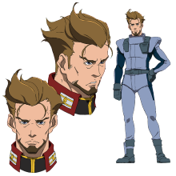
埃古·哈卡纳： 地球联邦宇宙军所属。宇宙巡洋舰“大马革士”的MS部队，执行机密任务“狩猎不死鸟”的杰札尔（Schegar）队的队长。阶级是少校。曾参加过反击“夏亚的反叛”的作战。目睹了“阿克西斯”被人们推回宇宙的奇迹。相信新人类的存在，并对乔纳·巴斯塔有着难以表达的信任。
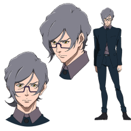
布里克·泰克诺： 得到卢欧·武明的许可，担当卢欧商会的特别顾问米谢儿的秘书的青年。
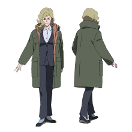
玛莎·毕斯特·卡拜因： 嫁到阿纳海姆电子公司创业家的毕斯特家族的一员。塞亚姆·毕斯特的孙女。因为干预了拉普拉斯事件而被收监，但在移送过程中被卢欧商会的私兵劫走。
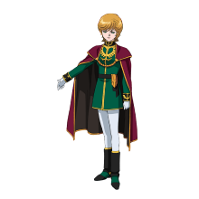
米妮瓦·拉欧·扎比： 扎比家的遗孤。在“拉普拉斯之乱”过后，居住在航宙战舰墨瓦腊泥加内的毕斯特府邸。不在轻易出现在公众视线之内。并利用其扎比家族的威望，来制衡吉翁共和国中的好战分子。
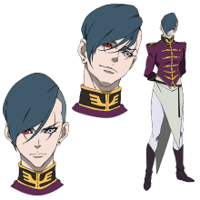
佐尔坦·亚卡年： 27岁。想要捉到凤凰的吉翁共和国军上尉。 新安州·原石的驾驶员。 与新吉翁余党军“带袖的”的首脑弗尔·伏朗托一样，是被研发为夏亚再世的强化人类。因为其性能未能达到当初吉翁高层的预估，后被吉翁高层所遗弃，不受重用，在弗尔·伏朗托死后，被重新任用，当因为之间的种种经历，使得其心理产生扭曲。
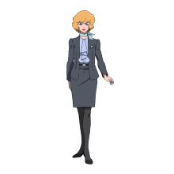
斯蒂芬妮·卢欧： 米谢儿的义姐。卢欧·无明的女儿，现任卢欧商会的社长。为了守护商会，终止了的米谢儿秘密进行的“独绝奇点（Singularity One）”的入手作战。
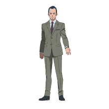
莫纳汉·巴哈： 吉翁共和国外务大臣。瞒着米妮瓦和新吉翁有往来，是原吉翁公国首相达尔西亚的儿子。表面上极力维持联邦与吉翁之间的和平关系，但暗地里一直不放过与联邦斗争的机会。
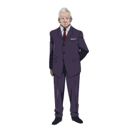
毛里： 地球联邦军参谋本部所属。阶级是中将。对米谢儿的占卜很不信服，但暗中和米谢儿的姐姐斯蒂芬妮有往来。
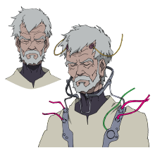
卢欧·无明： 以新香港为据点，对地球联邦政府有很大影响的卢欧商会的会长。现在用冷冻药囊沉睡中。史蒂芬妮和米谢儿的父亲。
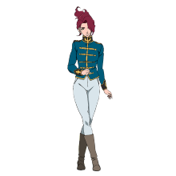
埃里克·雨果： 29岁。吉翁共和国军所属。阶级为中尉。负责监视佐尔坦，暗地里听从莫纳汉的指示。
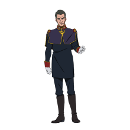
埃斯科拉·盖达： 地球联邦军的特殊部队迪坦斯所属。阶级是大佐。出自自保，把莉塔留下而将米谢儿交给了卢欧商会。

玛迦： 奥古斯塔研究所的上级研究员。协助埃斯科拉，反反复复地对疑似NewTpye的少男少女们进行残酷的实验。